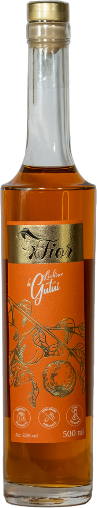
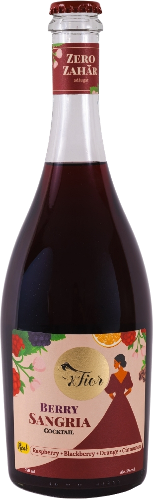
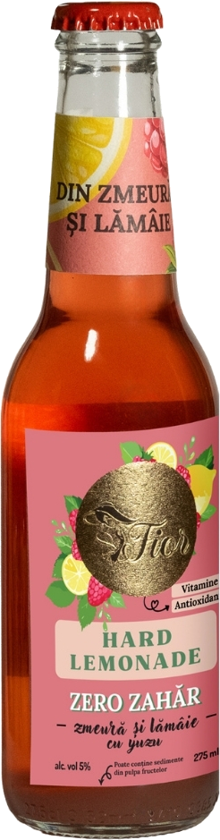
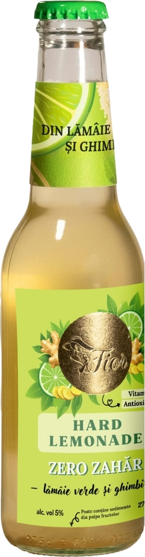
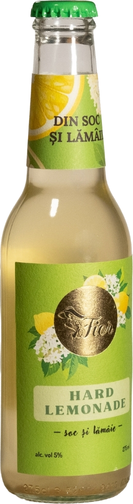

Lichior de gutui
Un fior
de Crăciun.
Cald, catifelat și auriu, ca lumina din geam în seara de Ajun.

Consumați cu responsabilitate!
Lichior de gutui
Cald, catifelat și auriu, ca lumina din geam în seara de Ajun.

Consumați cu responsabilitate!
Berry Sangria
Zmeură, mure, portocală și scorțișoară. Toată aroma iernii, într-o sticlă.

Consumați cu responsabilitate!
De sărbători, toată familia Fior se adună la aceeași masă.



Consumați cu responsabilitate!
Să ai parte de sărbători calde, liniștite și pline de fiori frumoși.
Consumați cu responsabilitate!
Cocktail ready to drink
Flori de soc, lămâie și mentă. Răcoros, ușor și fără zahăr.
Consumați cu responsabilitate!
Patru arome răcoritoare. Un singur fior.


Consumați cu responsabilitate!